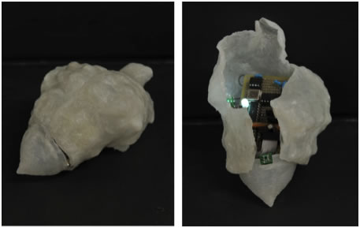
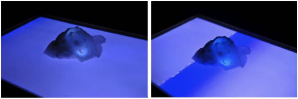
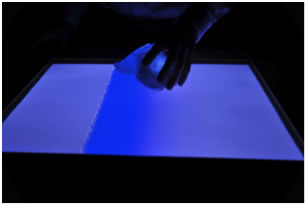

Shelltone

Overview
Shelltone is an art/design project that explores how to sonificate (turn some information to audio) a scenery. Shelltone consists of a tabletop screen that displays an animation of sea waves, and a shell-shaped figure that sonifies the animation. The screen serves as a frame that separates the virtual world from the real world, and the statue is a “hole" through which you can thus “hear" a soundscape that may be spreading in the virtual world. Shelltone also indicates the possiblity of a more seamless, portable, and tangible sonification interface.
My Role
I led this project as a Design Technologist, where I designed Shelltone and implemented a circuit inside the statue.
Process
Sonification is still a concept that is hardly found in any existing products or even research projects. Just converting visual to audio is not narrow enough to tell a story. So I framed it with one of the most familiar poet phrases in the world, "Mon oreille est un coquillage Qui aime le bruit de la mer (My ears are shells, fondly hearing the sound of the sea), as Jean Cocteau composed.
We decided to focus on this scenario, hearing the sound of sea shore from a shell.
  Outcome
Exhibited in Inter College Music Concerte 2012 as a varsity student artwork.
Contributions
My contributions were Ideation, Prototyping(High-fidelity, software and hardware development including circuit design for the statue, audio signal processing for recording/playing sounds, and etc.)
Exhibitions
Hidekazu Saegusa, Musashi Nakajima, “Shelltone - Frame of the World - a Figure and a Scenery” [in Japanese], (Shelltone – Sekai no Madowaku – Aru Hitorsu no Katachi to Fuukei), Inter College Computer Music Concert 2012, co-hosted with Information Processing Society of Japan Special Interest Group on Music and Computer (2012) [Varsity Student Research Exhibition].